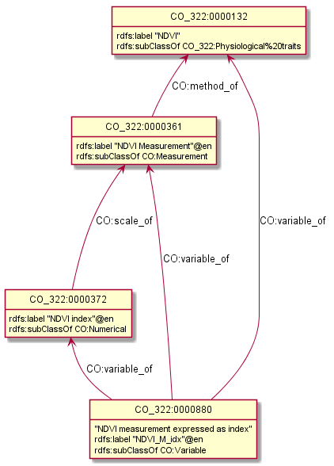

BigDataGrapes Ontology Notes
Table of Contents
1 Intro
1.1 Abbreviations and Notes
Sorted alphabetically (previously I had from generic to specific, but that quickly got messy)
- AEO (OAE): Agricultural Experiments Ontology
- AFEO: Agri-Food Experiment Ontology
- http://agroportal.lirmm.fr/ontologies/AFEO
- http://agroportal.lirmm.fr/ontologies/AFEO?p=classes#visualization and other detail tabs give API Key errors. Can you ask LIRMM to fix this?
- AGRO: Agronomy Ontology
- BCO: Biological Collection Ontology
- BFO: Basic Formal Ontology
- ChEBI: Chemical Entities of Biological Interest
- Chebi is "weird". Need everything that is somehow related to class CHEBI_33286 (including classes that belong to the chemical entity hierarchy)
- CO: Crop Ontology (series of)
- CO_320: Rice
- CO_322: Maize
- CO_356: Vitis (viticulture)
- EO (ENVO): Environment Ontology. Need these 3 classes (they are the biggest), and maybe we are missing some classes there:
- ENVO_00010483 environmental material
- ENVO_00002297 environmental feature
- ENVO_02500000 environmental system process
- IAO: Information Artifact Ontology
- NCBITaxon: NCBI Taxonomy
- Agrovoc cannot be trusted regarding the taxonomy of species. The scientific names hierarchy should come from another standard.
- NCBI Taxonomy is not perfect either, but it is much better in terms of updates (particularly for plants)
- OBO: Open Biological and Biomedical Ontology (a big set)
- OEPO: Ontology for Experimental Phenotypic Objects
- OFPE
- PATO: Phenotypic Quality Ontology
- PCO: Population and Community Ontology
- PECO: Plant and Environemental Conditions Ontology
- PO: Plant Ontology
- RO: Relations Ontology
- SDGIO: SDG-Interface Ontology
- TO: Trait Ontology
- UO: Unit Ontology
1.2 Metrics
- Many ontologies describe imported terms (from external namespaces). Eg AFEO, AEO include fairly complete copies of SKOS and DCT. Not only this constitutes "namespace hijacking", but it also likely inflates the metrics.
- Different numbers are reported for some of the ontologies:
| Classes | Properties | Individuals | Link | |
|---|---|---|---|---|
| AEO | 56 | 36 | http://vest.agrisemantics.org/content/agricultural-experiments-ontology | |
| AEO | 250 | 26 | 0 | http://www.ontobee.org/ontostat |
| TO | 4927 | https://www.ebi.ac.uk/ols/ontologies/to |
1.3 Tools
- http://www.obofoundry.org/: list of ontologies, with resource links
- http://browser.planteome.org/amigo: browser for PO, TO, EO
- tree browser: http://browser.planteome.org/amigo/dd_browse
- graph visualization of selected term: http://browser.planteome.org/visualize?mode=client_amigo
- http://www.ebi.ac.uk/ols/
- Eg http://www.ebi.ac.uk/ols/ontologies/agro
- Does have the Crop Ontologies
- Tree browser for classes and properties
- Shows graphs
- Very useful search, eg https://www.ebi.ac.uk/ols/search?q=Canopy+green+normalized+difference+vegetation+index
- From twitter https://twitter.com/EBIOLS:
- 200 ontologies, 5M classes, 16k props, 476k individuals
- Our new Ontology mapping service (OxO) will be integrated into OLS in 2018
- EMBL-EBI Ontology Xref Service (ontology mapping) (OxO). https://www.ebi.ac.uk/spot/oxo/
- TODO: research this!!!
- GODAN VEST: AgriSemantics Map of Data Standards
- 398 ontologies
- 215 Food and agriculture; 180 Generic / peripheral
- 76 from AgroPortal, 328 from VEST Registry
- Eg 55 ontologies on Plant Science and Plant Products
- Eg http://vest.agrisemantics.org/content/agricultural-experiments-ontology
- http://www.ontobee.org
- Eg http://www.ontobee.org/ontology/po
- Eg http://www.ontobee.org/ontology/agro (same as http://www.ontobee.org/browser/index.php?o=agro)
- Please note the catalog treats namespaces as case-insensitive, so http://www.ontobee.org/ontostat/catalog/PO?prefix=PO and http://www.ontobee.org/ontostat/catalog/PO?prefix=po return the same thing (2200 terms, the union of the two namespaces)
- Detailed Statistics (including imported terms) that illustrate the complexity, eg see http://www.ontobee.org/ontostat/PO
- Total stats http://www.ontobee.org/ontostat: 177 ontologies, 4.3M classes, 21k props, 668k individuals
- Doesn't have the Crop Ontologies
- http://aber-owl.net
- Eg http://aber-owl.net/ontology/AGRO
- Simpler browsing
1.3.1 Tool Lists
- 25 Tools (and datasets, ontologies) presented during the workshop PhenoHarmonIS 2016:
2 Ontology Notes
- Ontology namespace and ontology file differ significantly, eg
po:http://purl.obolibrary.org/obo/po# vs http://purl.obolibrary.org/obo/po.owl - Classes, properties and even some ontology files use numeric codes rather than English names. This makes it necessary to implement some search/browse interface to use them efectively.
- Even
rdfs:labeloften uses unreadable abbreviations. EgCO_322:0001093"EWid_M_mm": it requires digging to find out this is related toCO_322:0001091"Ear width" (CO:acronym "EWid"),CO_322:0001092"EWid - Measurement", andCO_322:0000206"mm" (millimeters) - Using slash in local names make invalid prefixed names, eg
CO_322:0000320/2is value 3="21-30% dead leaf area" ofCO_322:0000320"0-10 Senescence scale". - Using space in local names results in
%20and can't use prefixed names, eg http://www.cropontology.org/rdf/CO_356:Biotic stress - Many entities are declared both
skos:Concept, owl:NamedIndividual, owl:Classand connected by bothrdfs:subClassOfandskos:broaderTransitive. Eg for the above example (value within a scale), both the vlaue and scale are represented in this way. Alhough this may make creating browsers simpler, it is not proper modeling, represents heavy punning and makes OWL inference impossible. It also leads to redundant expression of class relations, eg
CO_322:0000880 CO:variable_of CO_322:0000132; rdfs:subClassOf [ a owl:Restriction ; owl:onProperty CO:variable_of ; owl:someValuesFrom CO_322:0000132 ] ;
- Property naming convention (start with lowercase) not followed, eg
po:Tomato rdfs:subPropertyOf oboInOwl:SubsetProperty"Term used for tomato" ;
2.1 Prefix Problems
- Empty (this is a bad practice!)
Improper (
rdf1:whereCO:would be better, maize.owl)@prefix rdf1: <http://www.cropontology.org/rdf/>
Invalid (to.owl)
@prefix obo: <http://www.geneontology.org/formats/oboInOwl#http://purl.obolibrary.org/obo/> .
This also obscures the canonic
obo:index@prefix obo1: <http://purl.obolibrary.org/obo/> .
Different namespaces for the same ontology, eg (to.ttl)
@prefix to: <http://purl.obolibrary.org/obo/to#> .
is used only for a few meta-terms, eg:
obo:TO_0000807 oboInOwl:inSubset to:Allium_porrum
Most TO terms are defined eg as
obo:TO_0000807, so could use:@prefix TO: <http://purl.obolibrary.org/obo/TO_> .
- Similarly (po.ttl):
obo:PO_0006440(class) butpo:Angiosperm, po:derives_by_manipulation_from, po:Tomato(properties) Similarly (agro-edit.ttl):
@prefix UO: <http://purl.obolibrary.org/obo/UO_>. @prefix uo: <http://purl.obolibrary.org/obo/uo#>.
- Similarly (po.ttl):
- vitis.ttl doesn't use any prefixes
2.2 Information Templates
2.2.1 Class
- rdfs:label: name
- obo:IAO_0000115: definition
- rdfs:comment: scope note
- rdfs:subClassOf: subclasses and restrictions
- owl:equivalentClass: restrictions (eg owl:intersectionOf)
- oboInOwl:created_by
- oboInOwl:creation_date
- oboInOwl:hasDbXref: sources of information (commit, author or publication), eg "NIG:Yukiko_Yamazaki", "FNA:00e30ce4-70bc-489c-86df-73030c9ece1e", "PO_GIT:658", "PO_REF:00002", "POC:curators", "ISBN:9780023681905", "PMID:18978364", "GO:0022611"
- oboInOwl:hasExactSynonym
- oboInOwl:hasOBONamespace
- oboInOwl:id
2.2.2 Deprecated class
obo:PO_0006441 a owl:Class ; obo:IAO_0000231 obo:IAO_0000227 ; obo:IAO_0100001 obo:PO_0009029 ; owl:deprecated true .
2.3 Dependencies
3 Specific Ontologies
3.1 AGRO
- source: https://github.com/AgriculturalSemantics/agro
- alpha version, no official release yet
- https://github.com/AgriculturalSemantics/agro/blob/master/src/referenceMaterial/AgrO variables.xlsx could be useful for understanding. Eg "Soil variables" has
| Variable name | SoiEle_No contact _mS/meter |
| Parameter | Soil electrical conductivity |
| Entity | Soil |
| Attribute | Electrical conductivity |
| Parameter synonyms | EC |
| Parameter abbreviation Other suggestion | SoiEle |
| Parameter description | Soil electrical conductivity is the ability of soil to conduct electrical current. |
| Parameter description source | http://ohioline.osu.edu/aex-fact/0565.html |
| Parameter class | Soil variable |
| Method abbreviation | No contact |
| Method name | No contact method |
| Tool / procedure | A non contact sensor works on the principle of Electromagnetic Induction (EMI). EMI does not contact the soil surface directly. The instrument is composed of a transmitter and a receiver coil usually installed at opposite ends of a non-conductive bar located at opposite ends of the instrument. |
| Method class: Measurement, Counting, Estimation, Computation, Observation | Measurement |
| Method reference | http://ohioline.osu.edu/aex-fact/0565.html |
| Scale abbreviation | mS/meter |
| Scale name | mS/meter |
| Scale class | Numerical |
- Unfortunately, this is not even in agro-edit.owl
- Scale class: Numerical, Nominal, Ordinal, Text, Code, Time, Duration
- https://github.com/AgriculturalSemantics/agro/blob/master/src/ontology/agro.obo is empty
https://github.com/AgriculturalSemantics/agro/blob/master/src/ontology/agro.owl has an invalid URL:
riot --formatted=turtle agro.owl 1>agro.ttl 10:51:21 WARN riot :: [line: 10060, col: 83] {W107} Bad URI: <http:://en.wikipedia.org/wiki/Mimicry> Code: 57/REQUIRED_COMPONENT_MISSING in HOST: A component that is required by the scheme is missing.defines many terms in other namespaces ("namespace hijacking"), eg UO, RO, etc:
obo:UO_0000184 a owl:Class ; rdfs:label "kilogram per meter" ;
3.1.1 AGRO-edit
- new version in development: https://github.com/AgriculturalSemantics/agro/blob/master/src/ontology/agro-edit.owl
- agro-edit.owl is OWL Functional Notation, unlike agro.owl which is RDF/XML but
- need to use http://mowl-power.cs.man.ac.uk:8080/converter to convert it.
- Failed because of missing import
http://purl.obolibrary.org/obo/agro/imports/po_import.owl ->
https://raw.githubusercontent.com/AgriculturalSemantics/agro/master/imports/po_import.owl
- This alternative works ok: https://github.com/AgriculturalSemantics/agro/raw/master/src/ontology/imports/po_import.owl
- This "parallel" import works ok: https://raw.githubusercontent.com/AgriculturalSemantics/agro/master/imports/chebi_import.owl
- An import of the same name (but different content) appears as:
- https://github.com/FoodOntology/foodon/raw/master/imports/po_import.owl
- http://www.geneontology.org/ontology/imports/po_import.owl,
- http://purl.obolibrary.org/obo/envo/imports/po_import.owl,
- http://purl.obolibrary.org/obo/go/extensions/po_import.owl -> http://snapshot.geneontology.org/ontology/extensions/po_import.owl (not found)
- Turns out this missing po-import was a temporary failure. But now the Manchester Convertor is down! ;-)
Opening https://github.com/AgriculturalSemantics/agro/blob/master/src/ontology/agro-edit.owl with Protege gives this error in OWLFunctionalSyntaxOWLParser:
Encountered " <ERROR> "< "" at line 7, column 1. Was expecting: "Ontology" ... (Line 0)- Opening http://purl.obolibrary.org/obo/agro-edit.owl gives no errors, but loads no ontology either
- Opening the local file AGRO-edit.owl: success (finally!)
- Failed because of missing import
http://purl.obolibrary.org/obo/agro/imports/po_import.owl ->
https://raw.githubusercontent.com/AgriculturalSemantics/agro/master/imports/po_import.owl
- Uses simple code generation with Python (called "quality patterns", because they guarantee a bunch of terms are generated consistently. Eg qualityHier_2Epattern.txt has rows like this:
| iri | iri label | entity1 | entity1 label | entity2 | entity2 label | attribute | attribute label | synonym | definition |
| AGRO_2000001 | soil water content | ENVO_00001998 | soil | CHEBI_46629 | water | PATO_0000025 | content | Above ground residue moisture | Moisture concentration of the above ground residue |
- (this particular term is not emitted in AGRO-edit.owl)
3.2 AT
RDF http://data.ifpri.org/lod/at.owl, doc http://data.ifpri.org/lod/at/resource/
- wrong URL (extraneous
#) http://data.ifpri.org/lod/at/resource/#Hybrid_maize_variety_7 some bad namespaces, eg
@prefix j.0: <http://purl.org/dc/terms/> . # should be dct:
some unfinished individuals, eg (
name_what?)AT:name_ a AT:Hybrid_guinea-type_sorghum_variety ; AT:hasTargetCrop crop:Sorghum .
doesn't conform to naming conventions, eg
AT:organization a owl:Class . # should be capitalized AT:rhizobial_inoculant a owl:Class . # should be capitalized
- uses a few terms from this namespace that doesn't resolve: http://data.ifpri.org/lod/crop/
improperly formatted timestamp:
dc:date "Jul 28, 2013 6:56:15 AM"^^xsd:dateTime ;
3.3 ENVO
- reproduces big chunks of CHEBI and UBERON
3.4 OEPO
doesn't define and use these prefixes:
@prefix oepo: <http://www.phenome-fppn.fr/vocabulary/2018/oepo#>. @prefix foaf: <http://xmlns.com/foaf/0.1/>.
- http://www.phenome-fppn.fr/vocabulary/2018/oepo is missing
a owl:Ontology. Instead, this type (and extra metadata) is attached to a blank node These two nodes are disconnected, i.e. not connected to the ontology itself. Also, using
owl:versionInfofor the first one is very strange:<http://bioportal.bioontology.org/ontologies/URI> owl:versionInfo "http://www.phenome-fppn.fr/vocabulary/2018/oepo" . <http://bioportal.bioontology.org/ontologies/versionSubject> owl:versionInfo "releases/2017-12-12" .
The correct way to do this is:
<http://www.phenome-fppn.fr/vocabulary/2018/oepo> a owl:Ontology; vann:preferredNamespacePrefix "oepo"; vann:preferredNamespaceUri "http://www.phenome-fppn.fr/vocabulary/2018/oepo#"; owl:versionInfo "releases/2017-12-12".
The ontology carries its own
owl:versionInfo, which should be broken up as follows:owl:versionInfo "Version 3.1"; dct:modified "2018-06-06"^^xsd:date; dct:creator "INRA - MISTEA - LEPSE".
- Hijacking (redefinition) of
foaf:Agentand a bunch ofskos:properties Links are emitted as a strange mixup of properties and URLs into a string:
oepo:WindSensor rdfs:isDefinedBy "skos:exactMatch http://purl.oclc.org/NET/ssnx/meteo/aws#WindSensor" ;
This should be rendered as follows (
skos:exactMatchis usually used for concepts):oepo:WindSensor owl:equivalentClass <http://purl.oclc.org/NET/ssnx/meteo/aws#WindSensor>
This below is even stranger because it doesn't use the semantic URL
oepo:Silk rdfs:isDefinedBy "skos:exactMatch http://www.ontobee.org/ontology/rdf/PO?iri=http://purl.obolibrary.org/obo/PO_0006488" ;
Should be
oepo:Silk owl:equivalentClass <http://purl.obolibrary.org/obo/PO_0006488>
This also doesn't use the semantic URL:
oepo:maxInclusive rdfs:isDefinedBy "skos:exactMatch <https://www.w3.org/TR/xmlschema-2/#rf-maxInclusive>"
This is a URL inside some text; the semantic one is http://www.w3.org/2001/XMLSchema#maxInclusive
- Not sure why it has to define things that already exist in other ontologies, eg:
- Isn't
oepo:Unitthe business ofUO? oepo:sfContainsis copied from GeoSPARQL. Why not use the GeoSPARQL property directly?
- Isn't
This transitive declaration makes no sense since the domain and range are disjoint:
oepo:participatesIn a owl:TransitiveProperty; rdfs:domain [ a owl:Class ; owl:unionOf ( oepo:Device oepo:ScientificObject )] ; rdfs:range oepo:Experiment .
There can be no path of 2 consecutive
oepo:participatesIn, so the transitive declaration is pointless- Many domains and ranges are not specified, which leaves some questions, eg
- What are the expected values of
oepo:hasValue? - What is the domain of
oepo:usesVector, and what vectors have to do withoepo:Device | oepo:ScientificObject?
- What are the expected values of
3.5 Rice
- This (and other
CO_*ontologies) may not be needed by BDG, but we can use them as examples to extend Vitis, and maybe we can reuse some concepts. - "Subpart" is a tiny file that defines CO_320:ROOT as a class and concept.
- Uses empty prefix ":" for http://www.w3.org/2002/07/owl#, which is a bad practice.
- Uses prefix "rdf1:" for http://www.cropontology.org/rdf/: rename to something more descriptive eg "crop:".
- Should define prefix "rice:" http://www.cropontology.org/rdf/CO_320:
- Defines concepts with labels that are incomprehensible to me (eg "PanLng_MatAv_UPOV1to3"). Google search shows http://test.planteome.org/amigo/term/CO_320:0000824 where on the Graph view or Tree View we can see this is a particular "rice panicle length".
- Uses some URLs with space in them eg
rice:Biotic%20stress: bad practice,rice:Biotic_stressis better - Doesn't define ontology metadata (just a blank node
[a owl:Ontology]) - Uses some value URLs with slash, for which the rice: prefix cannot be used,
eg
rice:00000321/1is value "1= Strong no bending" of variablerice:00000321"Culm strength scale SES". Better to use_1instead of/1
3.6 Vitis
Grape Ontology including OIV and bioversity descriptors. INRA July 2017
- homepage (curation tool) http://www.cropontology.org/ontology/CO_356/Vitis.
- OBO is quite shorter and easier to read http://www.cropontology.org/obo/CO_356
- Download as Trait Dictionary returns Server Error
- Often cite reference: Liste_des_descripteus_OIV_pour_les_varietes_et_especes_de_vitis__2e_edition_5langues_04_2008.pdf
- Search (EBI) https://www.ebi.ac.uk/ols/search?ontology=co_356
- The structure is quite simple. It defines traits, methods, scales.
- Example: see 4.2.1
Problems:
- A bunch of "name: No method name found" (eg CO_356:0000309)
- Just what is
CO_356:0000379"No method name found" used in INRA sample data?
- Just what is
- Is
CO_356:1000215measured in grams (as suggested by its name "SBER_W_g") or milligrams (as suggested by its relation toCO_356:4000018"mg")? - Uses invalid prop
rdfs:subProperty(it'srdfs:subPropertyOf) - Invalidly declares several props (
CO:method_of,CO:scale_ofandCO:variable_of) asrdfs:subPropertyOf owl:ObjectProperty: should berdf:type CO_356:4000028"S1_5_by2" isCO:scale_ofa bunch of traits. It's invalidly declared a restrictionowl:onProperty CO:scale_ofwithowl:someValuesFromeach of these traits. This means that every instance of the scale "S1_5_by2" must have linksCO:scale_ofto each of these traits, or else it cannot be classified with the given class. This contradicts the open world assumption, since we may have no data about some of them.Some terms from the OBO format are missing in the NTriples format, eg scale values:
[Term] id: CO_356:4000033/1 name: undefined namespace: VitisScale synonym: "3-5-7" EXACT [] is_a: CO_356:4000033
Similarly, there is extra info in the Vitis browser that is not represented in NTriples:
Lower limit 3.0 Upper limit 7.0
- Many terms required for AUA data are missing, eg "Vegetation" or "NDVI" finds nothing
3.6.1 TODO Representing Vitis Observations
Get some example observation data using this ontology!
- Eg Trait "Dry weight per shoot" has Necessary complement: "Date" (i.e. it's pointless to record this trait unless a date is also recorded), and we must see some examples of how to lay out this bundle of data.
- I know how to do it with W3C CUBE, but I'm sure the OBO/AGRO community have their established way
4 Mapping
Let's try to map some of the Grape Table Data fields to the ontologies
4.1 Normalized Difference Vegetation Index (NDVI)
4.1.1 NDVI in Linked Open Vocabularies
LOV doesn't have anything relevant for Vegetation:
- edac:Vegetation from ELSEweb is just a class (subclass of edac:EcologicalCommunity).
- ONTO's Proton ontology has a few types of vegetation areas, eg pext:Grassland
4.1.2 NDVI in Planteome Browser
- "vegetation index" auto-completes to 1 general and 3 specific terms:
- leaf area index (TO:0012001)
- maize normalized difference vegetation index trait (CO_322:0000132)
- wheat canopy normalized difference vegetation index trait (CO_321:0000301)
- wheat canopy simple ratio trait (CO_321:0000206)
- This means OBO people don't bother to advertise on LOV
4.1.3 Maize NDVI
Let's take the first specific term. See CO_322 Maize owl and CO_322:0000880 browse neighborhood
4.1.3.1 Maize NDVI Full Representation
CO_322:0000132 a skos:Concept , owl:NamedIndividual , owl:Class ; rdfs:label "Normalized difference vegetation index"@en ; rdfs:subClassOf CO_322:Physiological%20traits ; CO:acronym "NDVI"@en ; skos:broaderTransitive CO_322:Physiological%20traits ; skos:definition "Canopy normalized difference vegetation index."@en ; skos:prefLabel "Normalized difference vegetation index"@en . CO_322:0000361 a owl:NamedIndividual , owl:Class , skos:Concept ; rdfs:label "NDVI - Measurement"@en ; rdfs:subClassOf CO:Measurement ; rdfs:subClassOf [ a owl:Restriction ; owl:onProperty CO:method_of ; owl:someValuesFrom CO_322:0000132 ] ; CO:method_of CO_322:0000132 ; # NDVI trait skos:broaderTransitive CO:Measurement ; skos:prefLabel "NDVI - Measurement"@en . CO_322:0000372 a skos:Concept , owl:NamedIndividual , owl:Class ; rdfs:label "index"@en ; rdfs:subClassOf CO:Numerical ; rdfs:subClassOf [ a owl:Restriction ; owl:onProperty CO:scale_of ; owl:someValuesFrom CO_322:0000361 ] ; CO:scale_of CO_322:0000361 ; skos:broaderTransitive CO:Numerical ; skos:prefLabel "index"@en . CO_322:0000880 a owl:Class , skos:Concept , owl:NamedIndividual ; rdfs:label "NDVI_M_idx"@en ; rdfs:subClassOf CO:Variable ; rdfs:subClassOf [ a owl:Restriction ; owl:onProperty CO:variable_of ; owl:someValuesFrom CO_322:0000132 # maize NDVI trait ] ; rdfs:subClassOf [ a owl:Restriction ; owl:onProperty CO:variable_of ; owl:someValuesFrom CO_322:0000372 # maize index scale ] ; rdfs:subClassOf [ a owl:Restriction ; owl:onProperty CO:variable_of ; owl:someValuesFrom CO_322:0000361 # maize NDVI measurement method ] ; CO:variable_of CO_322:0000372 , CO_322:0000132 , CO_322:0000361 ; skos:broaderTransitive CO:Variable ; skos:prefLabel "NDVI_M_idx"@en .
4.1.3.2 Maize NDVI Illustration
CO:Variable ties up a specific trait (NDVI), scientific method (Measurement) and scale/unit of measure (Index).
CO_322:0000132 rdfs:label "NDVI"; rdfs:subClassOf CO_322:Physiological%20traits . CO_322:0000361 rdfs:label "NDVI Measurement"@en ; rdfs:subClassOf CO:Measurement ; CO:method_of CO_322:0000132. CO_322:0000372 rdfs:label "NDVI index"@en ; rdfs:subClassOf CO:Numerical ; CO:scale_of CO_322:0000361. CO_322:0000880 puml:label "NDVI measurement expressed as index"; rdfs:label "NDVI_M_idx"@en ; rdfs:subClassOf CO:Variable ; CO:variable_of CO_322:0000372 , CO_322:0000132 , CO_322:0000361. rdfs:subClassOf a puml:InlineProperty. CO:variable_of puml:arrow puml:up. CO:method_of puml:arrow puml:up. CO:scale_of puml:arrow puml:up-2.

4.1.4 Maize NDVI Problems
Problems:
- Why is NDVI expressed specifically for Maize, surely it applies to other crops?
- Why is there no relation to a more generic trait in CO?
- If there is a specific "NDVI Index" scale, what are its values?
- Is the NDVI Index different for Maize and other crops? I doubt it.
4.2 INRA Samples
4.2.1 INRA data3
../INRA/data3/data3-output-minimal.ttl:
- please use prefixes!
This is invalid datatype, should be
xsd:dateTimeStamp. Alternatively, don't pad with a fake time of 0!"2016-09-09T00:00:00.0000000Z"^^xsd:date
- http://www.cropontology.org/ontology/CO_356/Vitis#1000215 is wrong URL, should be http://www.cropontology.org/rdf/CO_356:1000215
- http://vinnotec.supagro.inra.fr/public/Pr/data/observation1 etc are missing
rdf:type
../INRA/data4/data3-output-minimal.ttl:
- Observation objects eg http://vinnotec.supagro.inra.fr/public/Pr/2016_SUNAGRI_L1_2_C01_Grappe are not defined in these files
I aggregated the two examples to ./img/inra-data3.ttl, added the respective definitions from Vitis, and made this illustration. INRA data is the top 4 nodes, and the rest is from Vitis:

4.3 TODO Soil Electrical Conductivity
4.4 TODO Representing Observations
Take this observation from WP8/Table Grapes Pilot- AUA/Data/Fasoulis Estate, file "5. Fasoulis_IFG_RapidScan.xlsx"
| PLOT | NDRE | NDVI | RE | NIR | R | LATITUDE | LONGITUDE | ELEVATION | HDOP | FIXTYPE | DATE | TIME | … |
| 37 | 0.2252 | 0.7376 | 20.836 | 33.084 | 5.132 | 37.81713 | 22.58971 | 291.5 | 2.8 | GPS | 5/23/2018 | 10:12:50 | … |